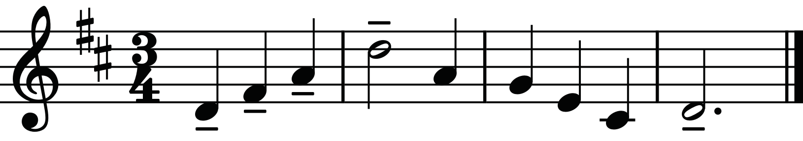

Activity 4.1
Listen to five audio clips of different musical extracts and justify which tempo term best describes each audio clip.
Activity 4.2
(a) Perform a short familiar melody using five different tempo instructions of your choice.
(b) Describe how each tempo has changed the mood of the melody in Activity 4.2 (a).
Exercise 4.1
1. Why is a metronome important for musicians when practising tempo?
2. Imagine you are conducting a school choir and you want to create a calm and solemn mood in the opening.
Which tempo term would you choose?
Terms and signs indicating articulation
Articulation refers to how a specific note or pitch is performed.
The application of articulations depends on the instrument making the music.
For example, the technique used by a violin player to slur notes will be completely different from that of a trumpet player.
A pianist and a singer will also apply different cues to make a melody sound legato.
The following is a short list of some common articulations, their names, meaning and what they look like when notated.
(a) Tenuto: It refers to a situation of holding the musical note for its full value; thus, giving it a slight emphasis. The symbol for tenuto is a short line on the respective note, as shown in Figure 4.9.
